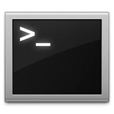

Memo des Commandes Terminal

Déplacements
Listes et détails
Copier, déplacer, supprimer
Créer
Afficher
Changer d'état
Chercher
Télécharger
Quitter
Lignes de commandes de bases
man nom de la commande > : Documentation de la commande.
Déplacements
- cd < adresse du dossier> : Se rend au dossier.
- cd /< adresse du dossier> : Se rend au dossier à partir de la racine (commence par un / ).
- cd / : Se rend à la racine.
- cd .. : Se rend au dossier parent (on peut faire ../../dossier/dossier, cela suit le chemin).
- cd ~ : Se rend dans son dossier personnel
- cd ~ : Se rend dans son dossier personnel
- ~ : équivaut à « /root/ » en utilisateur « root » (administrateur) ou « /home/< identifiant>/ » pour un « utilisateur normal ».
- cd ~< utilisateur> : Se rend au dossier personnel de l'utilisateur indiqué
Listes et détails
- ls ou dir : Liste le contenu d'un dossier.
- ls -l : Liste un dossier en détails. (Souvent remplacé par l'alias ll)
- df : Donne l'espace libre et occupé des disques et partitions.
- du -hs < dossier> : Donne la taille d'un dossier (avec les dossiers enfants compris).
- du -hs . : Donne la taille du dossier courant (avec les dossiers enfants compris).
- ls -a : Liste le contenu d'un dossier, y-compris les fichiers cachés (dont le nom commence par un point).
Copier, déplacer, supprimer
- cp < adresse du fichier source> < adresse du fichier de destination> : Copier.
- mv < adresse du fichier source> < adresse du fichier de destination> : Déplacer ou renommer.
- rm < fichier> : Supprimer un ou des fichiers.
- rm -Rf < adresse> : Supprimer même les dossiers non vides.
- rmdir < dossier> : supprimer un ou des dossiers vides !
Créer
- mkdir < dossier> : Créer un dossier
- pico < adresse> ou nano < adresse> : Édite un fichier en mode texte avec Pico (si le fichier n'existe pas il pourra le créer à la sauvegarde).
- ln -s < adresse à pointer> < nom du lien symbolique> : Créer un lien symbolique.
Afficher
- cat < fichier> : Affiche le contenu du fichier dans la console en bloc.
- less < fichier> : Affiche le contenu du fichier dans la console avec défilement. Entrer q pour quitter.
- more < fichier> : Similaire à less.
- head < fichier> : Affiche le début du fichier dans la console.
- head -n 10 < fichier>: Affiche les dix premières lignes du fichier dans la console.
- tail < fichier> : Affiche la fin du fichier dans la console.
- tail -n 10 < fichier> : Affiche les dix dernières lignes du fichier dans la console.
- tail -f < fichier> : Affiche toutes nouvelles lignes dans la console.
Changer d'état
- chgrp (-R) < nom du groupe> < adresse> : Change le groupe du ou des fichiers/dossiers.
- chown (-R) < nom de propriétaire> < adresse> : Change le propriétaire du ou des fichiers/dossiers.
- -R (facultatif) pour « Récursif » : S'applique à tous les dossiers enfants.
Chercher
find :
- find / -name fichier : rechercher « ficher » dans tous les dossiers à partir de la racine.
- find -name < nom> : Cherche les fichiers ou dossiers contenant < nom> (il est possible d'utiliser une expression).
- find ./ -type f | wc -l : Connaître le nombre de fichiers dans un dossier (et ses enfants).
- find ./ -type d | wc -l : Connaître le nombre de dossiers dans un dossier (et ses enfants).
locate < nom> : Cherche les fichiers ou dossiers contenant < nom>.
updatedb permet de mettre à jour la base de données de recherche de locate.
- grep '< motif>' < fichiers> : recherche < motif> dans le contenu des fichiers
- grep '< motif>' * : recherche < motif> dans le contenu de tous les fichiers du répertoire
- grep '< motif>' -R * : recherche < motif> dans le contenu de tous les fichiers du répertoire et des sous-répertoires
- grep -rn '< motif>' . : recherche < motif> dans le contenu de tous les fichiers du répertoire courant et des sous-répertoires et donne le ou les emplacements trouvés (fichier et numéro de ligne)
Télécharger
wget :
- wget '< url>' : Pour télécharger un fichier.
scp :
- scp -r < user>@< site.net ou IP>:< chemin> < destination> : Pour télécharger un fichier ou un dossier depuis serveur distant en passant par SSH.
Exemple : « scp -r -p root@site.net:/home/user . » qui va créer un copie du dossier 'user' distant dans le dossier courant en gardant les informations de ces fichiers (heures, accès, etc.) (-p) de façon récursive (-r).
Fermer / Quitter / Déconnecter